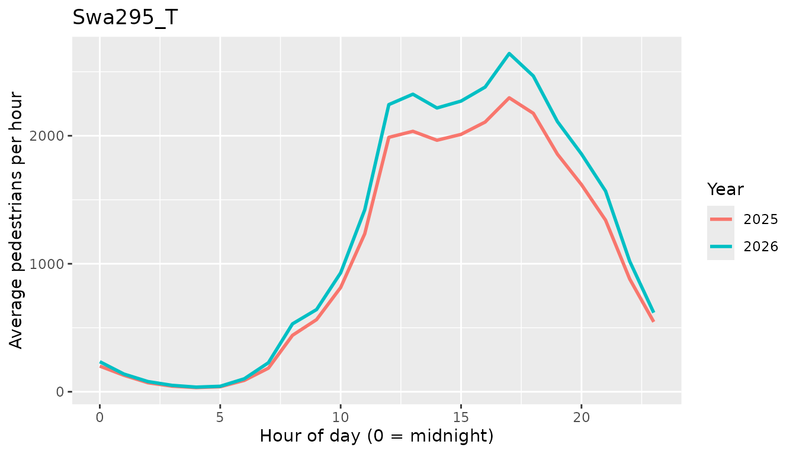

Who this is for
melbfoot is for people who plan around foot traffic in
central Melbourne, such as a café owner deciding when to open or an
event planner choosing a time and place. It helps you answer one
question:
When are the most people walking past my location, and how much has foot traffic changed since 2025?
The package includes hourly pedestrian counts from the City of Melbourne Pedestrian Counting System, two functions that summarise them, and a Shiny app.
Install
Install the package from GitHub:
# install.packages("remotes")
remotes::install_github("ETC5523-2026/etc5523-assignment-4-inayat-gill")Launch the app
The app opens in your browser. It uses only the data inside the package, so it works without an internet connection.
Use the app
The sidebar has four controls. Each one changes the charts and tables.
| Control | What it does |
|---|---|
| Sensor locations | Choose up to three counting sensors, ideally the ones closest to your business or event. The sidebar lists where each sensor is. |
| Years to compare | Choose which years to draw on the typical-day chart. |
| Type of day | Switch between weekdays (Monday to Friday) and weekends. |
| Same vertical scale | Off, each sensor gets its own scale, which shows the shape of the day. On, scales match so you can see which sensor is busiest. |
The app has three tabs:
- When is it busiest? shows the typical hour-by-hour pattern of foot traffic and a table with the busiest hour for each sensor and year.
- Change since 2025 shows each sensor’s average daily foot traffic as a percentage of the baseline year.
- Fields and notes explains every field and lists things to keep in mind.
If a choice leaves nothing to show, for example no sensor is chosen, the app shows a message that says what to change.
Interpret the outputs
When is it busiest?
Each line is the average count in each hour of a typical day. The highest point is when most people pass the sensor, which is a good guide to when to be open and fully staffed. If a later year’s line sits lower than the baseline year’s line, fewer people pass at that time. If the peak moves to a different hour, the best time to reach customers has shifted.
Use the functions in R
The functions behind the app can be used directly. First, find the sensor with the most recorded days:
library(melbfoot)
library(dplyr)
#>
#> Attaching package: 'dplyr'
#> The following objects are masked from 'package:stats':
#>
#> filter, lag
#> The following objects are masked from 'package:base':
#>
#> intersect, setdiff, setequal, union
library(ggplot2)
top_sensor <- ped_hourly |>
group_by(location_id, sensor_name) |>
summarise(days = sum(n_days), .groups = "drop") |>
slice_max(days, n = 1, with_ties = FALSE)
top_sensor
#> # A tibble: 1 × 3
#> location_id sensor_name days
#> <int> <chr> <int>
#> 1 3 Swa295_T 14666hourly_profile() returns the typical weekday for that
sensor in every year:
profile <- hourly_profile(
sensors = top_sensor$location_id,
years = unique(ped_hourly$year),
day = "Weekday"
)
ggplot(profile, aes(hour, mean_count, colour = factor(year))) +
geom_line(linewidth = 1) +
labs(
x = "Hour of day (0 = midnight)",
y = "Average pedestrians per hour",
colour = "Year",
title = top_sensor$sensor_name
)
The busiest hour in each year:
profile |>
group_by(year) |>
slice_max(mean_count, n = 1, with_ties = FALSE) |>
select(year, hour, mean_count, n_days)
#> # A tibble: 2 × 4
#> # Groups: year [2]
#> year hour mean_count n_days
#> <int> <int> <dbl> <int>
#> 1 2025 17 2297. 218
#> 2 2026 17 2643. 217change_index() compares each year’s average daily
traffic with a baseline year. A value of 100 means the same as the
baseline, and 110 means 10% more people:
change_index(top_sensor$location_id)
#> # A tibble: 2 × 6
#> location_id sensor_name year daily_mean baseline index
#> <int> <chr> <int> <dbl> <dbl> <dbl>
#> 1 3 Swa295_T 2025 25703. 25703. 100
#> 2 3 Swa295_T 2026 29558. 25703. 115.Things to keep in mind
- A count is a person passing a sensor, so the same person can be counted more than once. These are not unique visitors.
- The charts show averages for a typical day, not totals for a particular day.
- To make years comparable, the package keeps only 1 January to 2 November in each year. Only two years are available, so the change shows a one-year difference and not a long-term trend.
- Some sensors have gaps because they were added, moved or switched off. Averages built from fewer than 10 days are left out.
- Foot traffic is one input to a decision. It does not show how much people spend or why they were there.
Data source
City of Melbourne, Pedestrian
Counting System (counts per hour) and Sensor
Locations, from the City of Melbourne Open Data Portal. The code
that builds the packaged data is in
data-raw/ped_data.R.